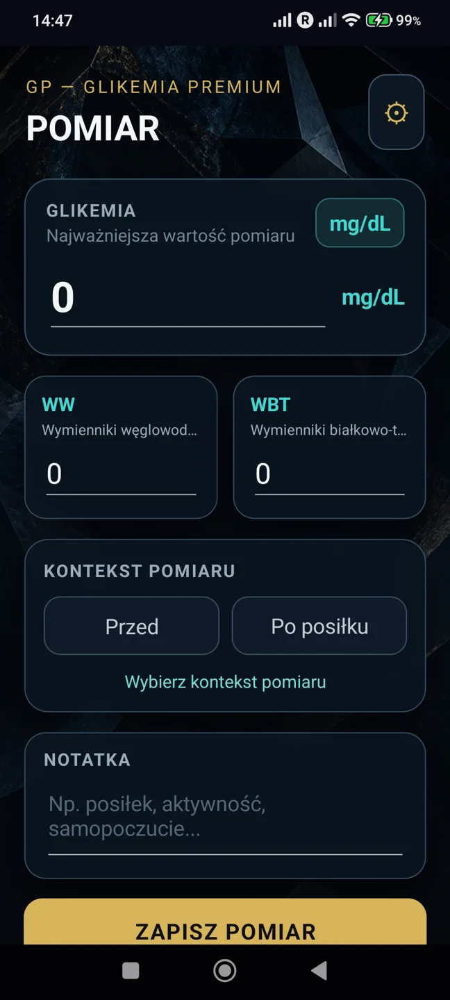
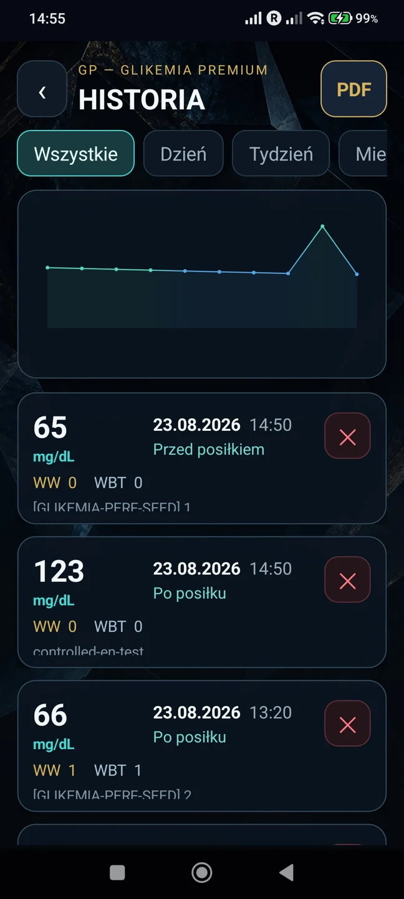
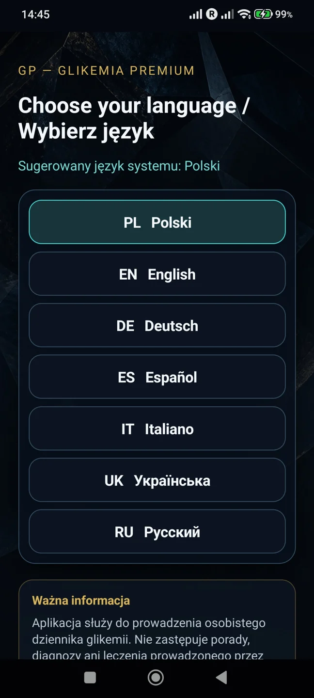
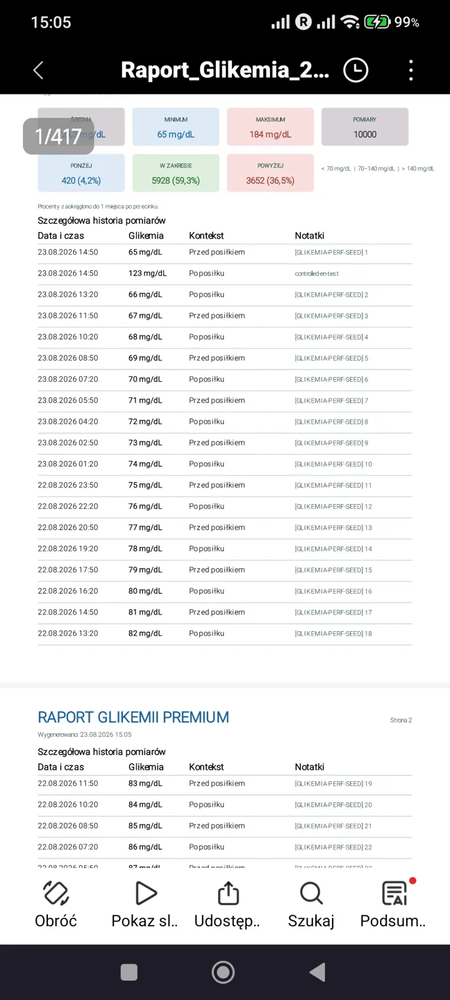
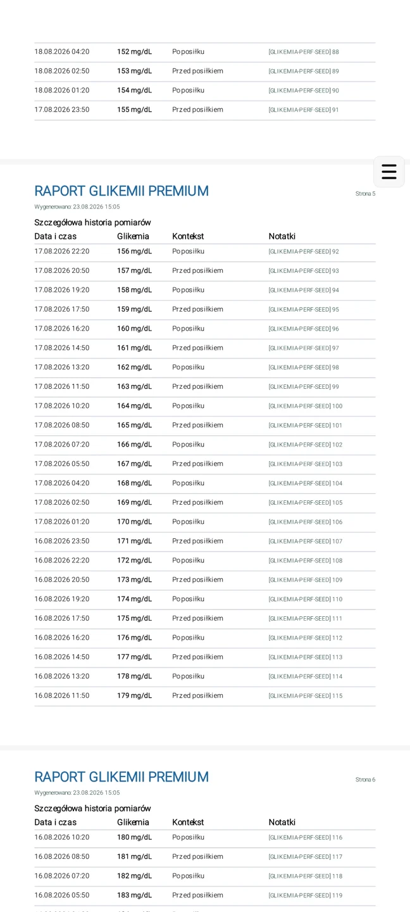

Dane na urządzeniu
Local-first: pomiary w lokalnej bazie SQLite. Bez przesyłania pomiarów na serwery ProgressKit i bez synchronizacji z chmurą.
Twój prywatny dziennik glikemii
Zapisuj pomiary, przeglądaj historię i twórz raporty PDF. Twoje dane pozostają na Twoim urządzeniu.
Pobierz Glikemia PremiumAndroid • bezpłatnieBez kontaBez reklam
Licznik pobrań: ładowanie…
Liczba zakończonych pełnych pobrań APK. Wznowienia/Range i wykrywalny prefetch nie są naliczane; to nie jest liczba unikalnych użytkowników ani instalacji.Wersja 1.0 · 80,24 MB · Android 7.0+ (minSdk 24)
Suma SHA-256 i szczegóły pliku
Pomiary, kontekst i notatki w jednym miejscu. Przesuń galerię, aby zobaczyć kolejne ekrany; na klawiaturze użyj strzałek po zaznaczeniu galerii.




Local-first: pomiary w lokalnej bazie SQLite. Bez przesyłania pomiarów na serwery ProgressKit i bez synchronizacji z chmurą.
Aplikacja nie zawiera analityki ani telemetrii. Nie wymaga rejestracji.
PDF powstaje lokalnie. Ty decydujesz, czy i komu go udostępnisz.
Jednostki, kontekst pomiaru, notatki oraz wsparcie WW / WBT.
Przeglądaj zapisane pomiary i korzystaj z lokalnych przypomnień.
Wybierz język interfejsu w aplikacji. Produkt zbudowany w .NET MAUI Android.
Android • bezpłatnie
Licznik pobrań: ładowanie…
Wersja 1.0 · 80,24 MB (76,52 MiB)
Android 7.0 lub nowszy · minSdk 24
APK podpisany cyfrowo i dystrybuowany bezpośrednio przez ProgressKit.
137c6e4bde496346d186e83d7a34b085aded2b8dc4280ab7e1053c44e1c5684bTo bezpośrednia dystrybucja APK poza Google Play. Pobieraj aplikację tylko z progresskit.pl.
Android lub Play Protect może pokazać komunikat dotyczący instalacji spoza Google Play. Sprawdź źródło pliku i treść komunikatu. Nie wyłączaj globalnie Play Protect. Po instalacji możesz cofnąć zgodę dla przeglądarki.
Glikemia Premium jest obecnie dostępna bezpłatnie bezpośrednio od ProgressKit. Przetestuj ją przez kilka dni, wróć i zostaw szczerą opinię.
Publikujemy autentyczne opinie po sprawdzeniu spamu i danych prywatnych. Ocena nie decyduje o publikacji.
Ładowanie opinii…
Aplikacja jest cyfrowym dziennikiem glikemii i nie zastępuje profesjonalnej porady medycznej.
Produkt zaprojektowany i rozwijany przez ProgressKit.